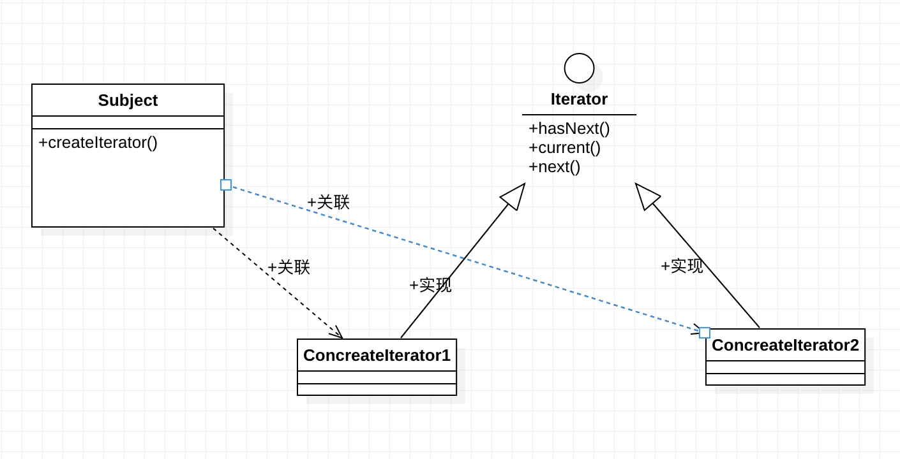

类别：行为型设计模式
目的：在改变对象内部数据结构时，不改变外部对该对象的迭代行为，从而减少因数据结构改变带来的外部代码改变
完整代码参考：https://1drv.ms/u/s!AquRvPzqx59Ri3wVBHQNkHkAz7ci?e=bO7hoD
典型场景
比如保存历史内容的编辑器Editor, 业务场景中需要取出所有的历史记录进行循环处理，一般是在Editor中提供一个方法返回所有的历史内容
Editor.java参考如下：
public class Editor {
private List<String> contentHistory = new ArrayList<>();
public void push(String content) {
contentHistory.add(content);
}
public String pop() {
return contentHistory.remove(contentHistory.size() - 1);
}
public List<String> getContentHistory() {
return contentHistory;
}
}
对应的循环历史记录的代码参考如下：
var editor = new Editor();
for (int i = 0; i < editor.getContentHistory().size(); i ++) {
System.out.println("content: " + editor.getContentHistory().get(i));
}
此时，上面的方式都是ok的，但是如果List<String> contentHistory因为业务需求变更了数据类型为private String[] contentHistory = new String[10]
public class Editor {
// ...
private String[] contentHistory = new String[10];
public String[] getContentHistory() {
return contentHistory;
}
// ...
}
那上面的循环就会因为数据类型改变而需要相应的调整为：
var editor = new Editor();
for (int i = 0; i < editor.getCount(); i ++) {
System.out.println("content: " + editor.getContentHistory()[i]);
}
在编辑器历史记录被引用次数很多时，比如数十次，这个相关代码调整的成本是非常大的，这时候就可以使用迭代器模式了
模式实现
定义迭代器接口
public interface Iterator {
boolean hasNext(); // 判断被循环的数据结构是否循环到末尾了
String current(); // 获取当前循环到的数据
void next(); // 准备获取下一个数据
}
然后把这个contentHistory数据结构使用这个迭代器接口的实现类进行包装返回，使用时用这个迭代器循环contentHistory，比如private String[] contentHistory = new String[10]实现迭代器参考如下
public class ArrayIterator implements Iterator {
private Editor editor;
private int count;
public ArrayIterator(Editor editor) {
this.editor = editor;
}
@Override
public boolean hasNext() {
return (count < editor.getCount());
}
@Override
public String current() {
return editor.getContentHistory()[count];
}
@Override
public void next() {
count++;
}
}
使用方式参考如下：
var editor = new Editor();
Iterator iterator = editor.createIterator(); // 注意这里的迭代器接口Iterator
while (iterator.hasNext()) {
System.out.println("content: " + iterator.current());
iterator.next();
}
可以看到循环contentHistory使用iterator迭代器进行代替了，这时如果contentHistory数据结构发生改变，只需要修改迭代器内部对新数据结构进行适配，不会影响使用Iterator接口的调用方，这样就减少了重复的代码修改了
比如List<String> contentHistory迭代器核心代码参考如下：
public class ListIterator implements Iterator {
private Editor editor;
private int count;
public ListIterator(Editor editor) {
this.editor = editor;
}
@Override
public boolean hasNext() {
return count < editor.getContentHistory().size();
}
@Override
public String current() {
return editor.getContentHistory().get(count);
}
@Override
public void next() {
count++;
}
}
可以看到使用数据结构的地方依赖了Iterator接口，只要数据结构实现了Iterator接口，使用方就无需改动了
UML

为什么迭代器模式更好
解偶因为数据结构变化而需要调整的代码到迭代器接口中，降低数据结构改变的维护成本
一些注意的点
迭代器实现可以使用内部类